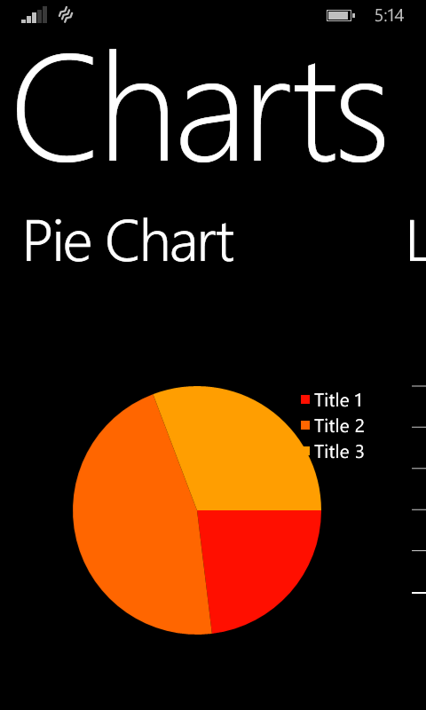

This sample will show you how to add Charts to your Windows Phone Apps. There is multiple solutions to add Charts on Windows Phone and this one is based on the open source project amCharts-Quick-Charts.
This sample is built in Visual Studio 2013 and use Windows Phone 8 SDK.
We will be using also NuGet Packages, so you need to know how to install Nuget Packgaes.
Description
1- Add references :
To work with am-Charts-Quick-Charts, you need to add the reference to your project by installing the Nuget Package AmCharts.Windows.QuickCharts.WP.
We will use 4 types of charts :
- PieChart
- LineChart
- BarChart
- MixedChart
2- PieChart
A Pie Chart is a circular chart divided into sectors, illustrating numerical proportion.
PieData : Title, Value

public class PieData
{
public string Title { get; set; }
public double Value { get; set; }
}
public class PieData { public string Title { get; set; } public double Value { get; set; } }
<!-- PieChart -->
<chart:PieChart
x:Name="PieChart"
Height="300" Width="400"
TitleMemberPath="Title"
ValueMemberPath="Value"
Background="Transparent">
</chart:PieChart>
<!-- PieChart --> <chart:PieChart x:Name="PieChart" Height="300" Width="400" TitleMemberPath="Title" ValueMemberPath="Value" Background="Transparent"> </chart:PieChart>
public class LineData
{
public string Category { get; set; }
public double Line1 { get; set; }
public double Line2 { get; set; }
public double Line3 { get; set; }
}
public class LineData { public string Category { get; set; } public double Line1 { get; set; } public double Line2 { get; set; } public double Line3 { get; set; } }
<!--LineChart-->
<chart:SerialChart x:Name="LineChart"
Height="300"
Width="400"
CategoryValueMemberPath="Category"
AxisForeground="White"
PlotAreaBackground="Black">
<chart:SerialChart.Graphs>
<chart:LineGraph Title="Line 1" ValueMemberPath="Line1" Brush="Red" StrokeThickness="5"/>
<chart:LineGraph Title="Line 2" ValueMemberPath="Line2" Brush="Blue" StrokeThickness="5"/>
<chart:LineGraph Title="Line 3" ValueMemberPath="Line3" Brush="Yellow" StrokeThickness="5"/>
</chart:SerialChart.Graphs>
</chart:SerialChart>
<!--LineChart--> <chart:SerialChart x:Name="LineChart" Height="300" Width="400" CategoryValueMemberPath="Category" AxisForeground="White" PlotAreaBackground="Black"> <chart:SerialChart.Graphs> <chart:LineGraph Title="Line 1" ValueMemberPath="Line1" Brush="Red" StrokeThickness="5"/> <chart:LineGraph Title="Line 2" ValueMemberPath="Line2" Brush="Blue" StrokeThickness="5"/> <chart:LineGraph Title="Line 3" ValueMemberPath="Line3" Brush="Yellow" StrokeThickness="5"/> </chart:SerialChart.Graphs> </chart:SerialChart>
public class BarData
{
public string Category { get; set; }
public double Value { get; set; }
}
public class BarData { public string Category { get; set; } public double Value { get; set; } }
<!--BarChart-->
<chart:SerialChart x:Name="BarChart"
Height="300"
Width="400"
CategoryValueMemberPath="Category"
AxisForeground="White"
PlotAreaBackground="Black">
<chart:SerialChart.Graphs>
<chart:ColumnGraph Title="Title 1" ValueMemberPath="Value" Brush="Red"/>
</chart:SerialChart.Graphs>
</chart:SerialChart>
<!--BarChart--> <chart:SerialChart x:Name="BarChart" Height="300" Width="400" CategoryValueMemberPath="Category" AxisForeground="White" PlotAreaBackground="Black"> <chart:SerialChart.Graphs> <chart:ColumnGraph Title="Title 1" ValueMemberPath="Value" Brush="Red"/> </chart:SerialChart.Graphs> </chart:SerialChart>
<!--MixedChart-->
<chart:SerialChart x:Name="MixedChart"
Height="300" Width="400"
CategoryValueMemberPath="Category"
AxisForeground="White"
PlotAreaBackground="Black">
<chart:SerialChart.Graphs>
<chart:ColumnGraph Title="Line 1" ValueMemberPath="Line1" Brush="Red"/>
<chart:LineGraph Title="Line 2" ValueMemberPath="Line2" Brush="Blue" StrokeThickness="5"/>
</chart:SerialChart.Graphs>
</chart:SerialChart>
<!--MixedChart--> <chart:SerialChart x:Name="MixedChart" Height="300" Width="400" CategoryValueMemberPath="Category" AxisForeground="White" PlotAreaBackground="Black"> <chart:SerialChart.Graphs> <chart:ColumnGraph Title="Line 1" ValueMemberPath="Line1" Brush="Red"/> <chart:LineGraph Title="Line 2" ValueMemberPath="Line2" Brush="Blue" StrokeThickness="5"/> </chart:SerialChart.Graphs> </chart:SerialChart>